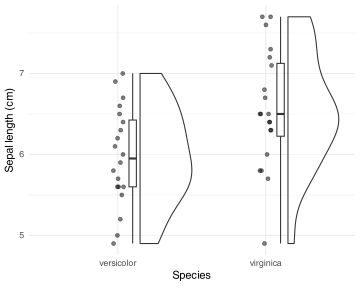

flowchart LR
A(Program + Text) -->|knitr/Quarto| B(Text with analysis results)
B --> C[LaTeX]
C --> CC[PDF]
B --> D[Word]
B --> E[HTML]
B --> F[Presentation]
B --> G[Book]
4 Scientific Reproducibility
4.1 Of mice, men and reproducibility
In 2013, a paper in PNAS made quite a splash. The authors compared transcriptomic responses to various human infommatory conditions (burns, trauma and inflammation) with the transcriptomic responses in the corresponding mouse models. The conclusion was in the title: Genomic responses in mouse models poorly mimic human inflammatory diseases.
Genomic responses in mouse models poorly mimic human inflammatory diseases (Seok et al. 2013)
A bit over a year later, in the same journal, another paper was published. The title was identical… almost identical: instead of “poorly mimic”, the authors wrote “greatly mimic”. Their conclusion was, it turns out, that mouse models are actually pretty good at mimicking human inflammatory diseases.
Genomic responses in mouse models greatly mimic human inflammatory diseases (Takao and Miyakawa 2015)
The fact that two papers come up with diametrically opposed conclusions is, in itself, not that surprising. That is what science is about, after all. The first surprising thing about these two papers was that they were based on the same data. The second paper was a re-analysis of the data from the first paper – done in a different way, which focused on similarities. Among other things, they looked only at genes that were significantly up- or down-regulated in either species rather than looking at all noisy genes. Also, rather than using parametric statistics, they focused on non-parametric alternatives – possibly more suitable. After all, we are not so much interested whether a gene is up-regulated 1.7 times or 1.9 times, but rather whether it is up- or down-regulated.
The second surprising thing was when Teresa Domaszewska, my student at that time, tried to reproduce the findings of both papers. Our idea was that evolutionarily speaking, the lineages leading to mice and humans split about 90 million years ago. That means that we share a lot of common evolutionary history, and obviously there will be many conserved parts of the immune system common to both species. However, for the past 90 million years our species evolved separately, in different environments, with different evolutionary pressures, constraints and lifestyles. We believed that a third paper should be written, one where the word “partly” would replace “poorly” or “greatly”.
Of mice, men and immunity: a case for evolutionary systems biology (Ernst and Carvunis 2018)
However, it turned out that although the data were public, an exact reproduction of all the results was impossible. The authors of either of the papers did not provide the exact code (programs) that were used to generate the results. Lime many other scientists, we found that the published methods are pitifuly insufficient to reproduce the results.
This is, unfortunately, a very common situation in biomedical research.
In 2021, results of a large-scale effort to reproduce 193 experiments from 53 high impact papers in cancer biology were published. As in previous attempts in other fields of science, it turned out that more than half of the findings could not be reproduced, and even in cases where the results were reproducibile, the effect sizes were usually smaller than originally reported. However, that is not even the most worrying part. Clearly, a successful reproduction of a scientific finding does not necessarily mean that the original finding was correct, and a failure to reproduce is not necessarily a sure sign that the original finding was wrong, and after all half of the findings were reproducible.
Investigating the replicability of preclinical cancer biology (Errington, Mathur, et al. 2021)
Challenges for assessing replicability in preclinical cancer biology (Errington, Denis, et al. 2021)
Much more problematic was the fact that the original papers did not provide enough information to even attempt a reproduction:
” Second, none of the 193 experiments were described in sufficient detail in the original paper to enable us to design protocols to repeat the experiments, so we had to seek clarifications from the original authors.” (Errington et al., 2021)
Challenges for assessing replicability in preclinical cancer biology (Errington, Denis, et al. 2021)
and:
“Third, once experimental work started, 67% of the peer-reviewed protocols required modifications to complete the research and just 41% of those modifications could be implemented. (…) This experience draws attention to a basic and fundamental concern about replication – it is hard to assess whether reported findings are credible. (ibid.)
This situation is, unfortunately, not unique to cancer biology and it saddens me to say that it is fairly common in bioinformatics as well. While usually the data necessary to reproduce the analyses included in a paper are obtainable, but the actual code (programs) used to generate the results are either not fully available or so poorly documented that reproducing the results while in theory possible in practice requires a large amount of work at best and is often next to impossible.
I like to use the term accountable: if you have a scientific result, be that a figure in a manuscript, a table or a supplementary Excel file, you should be able to easily trace it back to the primary readouts – the data collected in the lab, output by the sequencing machine, entered in the Excel sheet by the medical professional examining the patient. Fortunately, the tools to achieve that are not only available, but they are widely used and pretty easy to learn.
4.2 Accountable workflows with Quarto or Rmarkdown
The solution that I and many others advocate is to use what has been called by one of the pioneers of computer science, Donald Knuth, literate programming:
Let us change our traditional attitude to the construction of programs: Instead of imagining that our main task is to instruct a computer what to do, let us concentrate rather on explaining to human beings what we want a computer to do. “Literate Programming”, The Computer Journal 27 (1984), p. 97.
Literate programming (Knuth 1984)
The idea is that your whole analysis is a human readable document that contains both the text and the code (R scripts, Python programs, shell scripts…) that generate the presented results – figures, tables, Excel files… The document is then processed to produce the desired output format in a human readable form, and simultaneously the code is executed to actually generate the results.
This can be Rmarkdown, Quarto, Jupyter… the goal is that your code and your text are in one place, and the results of your calculations are entered automatically into the text.
The book that you are now reading is written using a system called Quarto, which is a modern version of Rmarkdown. If you are an R user, you probably use RStudio, which has excellent and native support for both Rmarkdown and Quarto. But Quarto is not limited to R; if you program with Python or Julia or even other languages, you can still use it in your workflow1.
1 In fact, the diagram above was generated using a graph scripting language called Mermaid, which is also supported natively in Quarto.
Here is how Quarto, Rmarkdown and similar systems work. Basically, you write your text as usual, including formatting in a way similar to how you emphasize text in emails (eg. stars like *this* result in italics like this). However, instead of writing up your results manually or copying and pasting figures from a separate program, you include the code that produces them directly in the text. For example, when I write that the p-value is equal to 0.05, I am writing literally this:
For example, when I write that the *p*-value is equal
to `r pval`, I am writing literally this:The \(p\)-value above is not entered manually (as 0.05), but is the result of a statistical computation. If the data changes, if your analysis changes, the \(p\)-value above will automatically change as well.
Why is that a big deal? If you have ever written a manuscript or report, you probably know why: data change, analyses change, and each time a change happens, you have to go back to your manuscript and change every single occurence of the results, every figure, every table. Not only is that tedious, but it is also error-prone: you may forget to change one of the results, and then your manuscript is inconsistent with itself.
But that is not all. The most important part of is that your entire analysis, every operation on your data, every step, every statistical test or choice you have made is automatically documented in your code. Let me give you another example. I have prepared a little dataset, stored as a CSV file and available for download from github2.
2 This is a tiny subset of the famous Iris dataset. You can find the whole dataset in R by typing iris into console.
Here is the code that I include in my Quarto document to read the data and run a simple statistical test. I have opted to show the code below, but it does not have to be as visible as that in the final document.
Code
# the URL of the CSV file ON github
file <-
"https://github.com/bihealth/howtotalk-book/raw/refs/heads/main/scripts/iris.csv"
# read the data from the URL
data <- read.csv(file)
# run a t-test comparing sepal length between two species
# and store the result in a variable
test_result <- t.test(Sepal_Length ~ Species, data = data)I now can refer to the results of the statistical test in my text. For example, I can write that the difference in sepal length between the two species is statistically significant, with a p-value of 0.009, and that there were 40 samples in total. None of these numbers are entered manually; if the data change, the results will be updated when you run Quarto again.
I can also include a figure just by writing the code that generates it. The figure is a so-called raincloud plot, which combines a boxplot, a violin plot and a scatter plot – all to demonstrate the distribution of data points.
Code
library(ggplot2) # nice plotting library
library(ggrain) # for raincloud plots
# make a rain cloud
ggplot(data, aes(x=Species, y=Sepal_Length)) +
geom_rain(alpha = 0.5) +
theme_minimal() +
labs(y="Sepal length (cm)", x="Species")

You can also take a look at the chapter High throughput data analysis in which you will find some figures and results generated from a real dataset. You can find the code corresponding to each figure and see precisely how I generated each result.
Quarto and Rmarkdown, apart from the advantages mentioned above, have excellent support for citations and bibliographies, cross-references to figures and tables, and many other features that make writing scientific manuscripts a breeze. Unfortunately, the downside is that most of your collaborators and coauthors will not be familiar with these systems and you will still have to produce Word documents for them to work with.